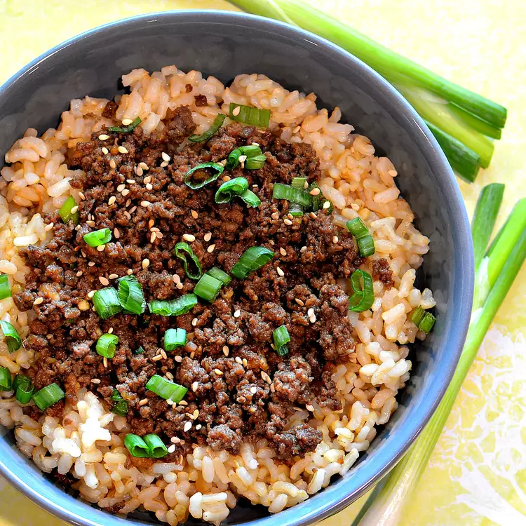

Korean Ground Beef Bowl

Description
Yeah, this Korean beef bowl looks quick and easy to make.
The ingredients can easily be adjusted to suit your taste.
Serve over warm rice or spiralized vegetables. I don't
know, honestly I just grabbed this recipe off the
website because I can't cook lol. Yeah, sorry about
the word plagiarism bro, I am just learning how to
make websites.
Ingredients
- 1 pound lean ground beef
- 5 cloves garlic, crushed
- 1 tablespoon freshly grated ginger
- 2 teaspoons toasted sesame oil
- ½ cup reduced-sodium soy sauce
- ⅓ cup light brown sugar
- ¼ teaspoon crushed red pepper
- 6 green onions, chopped, divided
- 4 cups hot cooked brown rice
- 1 tablespoon toasted sesame seeds
Steps
- Heat a large skillet over medium-high heat.
Add beef and cook, stirring and crumbling into
small pieces until browned, 5 to 7 minutes.
Drain excess grease.
-
Stir in garlic, ginger, and sesame oil and
cook until fragrant, about 2 minutes. Stir
in soy sauce, brown sugar, and red pepper.
Cook until beef absorbs some sauce, about 7
minutes. Add 1/2 of chopped green onions.
-
Serve over hot cooked rice; garnish with
sesame seeds and remaining green onions.
Macros
- Total Calories: 574 calories
- Protein: 29g
- Carbs: 70g
- Fat: 19g